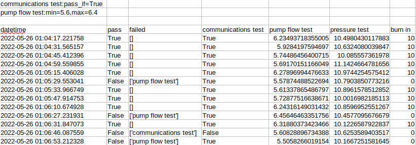
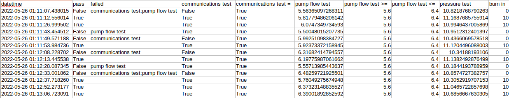

Saving Data¶
MATS provides a very flexible module for saving data.
ArchiveManager¶
The builtin ArchiveManager is the default class built for saving data. The ArchiveManager
really implements one method, save(). The save() method accepts a dict as the parameter
which contains key: value pairs containing the results of a single test execution.
There is a very specific format for the dictionary which is passed into the save() method. The
keys will represent the heading names. The values of the dict will also be of a dict type
and will contain a “value” key with a value. There is an optional nested “criteria” key which will
contain the “pass_if”, “min” and “max” criteria, also as a dict. An example would best illustrate:
{
'datetime': {'value': '2021-01-05 22:07:26.181921'},
'pass': {'value': True},
'failed': {'value': '[]'},
'communications test': {
'value': True,
'criteria': {'pass_if': True}
},
'pump flow test': {
'value': 6.281,
'criteria': {'min': 5.6, 'max': 6.4}
}
}
This dictionary will create the first row of data output below. Any custom save()
would need to support this data format.
Data Formats¶
At this time, the mats.ArchiveManager supports two different output formats, both of which are
tab-delimited text files.
Data Format 0¶
The default ArchiveManager output format is in the form of a tab-separated values file with the
pass-fail criteria placed at the top of the file. To specify this data format unambigously during
initialization, then specify during object instantiation ArchiveManager(data_format=0).
communications test:pass_if=True
pump flow test:min=5.6,max=6.4
datetime pass failed communications test pump flow test pressure test burn in
2022-05-26 01:04:17.221758 True [] True 6.234937183550046 10.498043011788305 10.0
2022-05-26 01:04:31.565157 True [] True 5.9284197594696995 10.632408003984718 10.0
2022-05-26 01:04:45.412396 True [] True 5.7448645640071545 10.085557361977978 10.0
2022-05-26 01:04:59.559855 True [] True 5.691701511660488 11.142466478165602 10.0
2022-05-26 01:05:15.406028 True [] True 6.278969944766333 10.974425457541233 10.0
2022-05-26 01:05:29.553041 False ['pump flow test'] True 5.578744885226942 10.790385077321618 0.0
2022-05-26 01:05:33.966749 True [] True 5.6133786548679705 10.896157851285196 10.0
2022-05-26 01:05:47.914753 True [] True 5.728775166386706 10.001698218511283 10.0
2022-05-26 01:06:10.674928 True [] True 6.243161490314319 10.859695255126715 10.0
2022-05-26 01:06:27.231931 False ['pump flow test'] True 6.45646463351756 10.457709567667866 0.0
2022-05-26 01:06:31.847073 True [] True 6.318803734234656 10.122658792283671 10.0
2022-05-26 01:06:46.087559 False ['communications test'] False 5.608288967343877 10.62535894035169 0.0
2022-05-26 01:06:53.212328 False ['pump flow test'] True 5.505826601915402 10.166725158164468 0.0
When imported into common spreadsheet software:
Note that the spacing is a bit off because the tabs are not aligned well. This file will import into packages such as pandas easily using:
pd.read_csv('./path/to/file.txt', delimiter='\t', skiprows=3)
Data Format 1¶
This data format intents to represent pass/fail constraints in the form of columns, meaning that
each column name that has a constraint will have one or more additional columns which specify that
column name with an additional modifier which describes the contraint. For instance, if the column
names speed and speed > exist , then the speed > column indicates that speed must be
greater than the contents of the column.
datetime pass failed communications test communications test = pump flow test pump flow test >= pump flow test <= pressure test burn in
2022-05-26 01:11:07.438015 False communications test;pump flow test False True 5.563650972683107 5.6 6.4 10.82187687902628 0.0
2022-05-26 01:11:12.556014 True True True 5.817794862061415 5.6 6.4 11.168768575591445 10.0
2022-05-26 01:11:26.999502 True True True 6.074734973459303 5.6 6.4 10.99464370058688 10.0
2022-05-26 01:11:43.454512 False pump flow test True True 5.500480152077348 5.6 6.4 10.951231240139677 0.0
2022-05-26 01:11:49.571188 False communications test False True 5.9925109838472705 5.6 6.4 10.436606957851806 0.0
2022-05-26 01:11:53.984736 True True True 5.92373372158945 5.6 6.4 11.120449608800289 10.0
2022-05-26 01:12:08.228702 False communications test False True 6.316824147945569 5.6 6.4 10.34188193105997 0.0
2022-05-26 01:12:13.445538 True True True 6.197759870616618 5.6 6.4 11.13824928764989 10.0
2022-05-26 01:12:28.087345 False pump flow test True True 5.5571398544363655 5.6 6.4 10.184419378895864 0.0
2022-05-26 01:12:33.001862 False communications test;pump flow test False True 6.482597219255007 5.6 6.4 10.857472738275735 0.0
2022-05-26 01:12:37.718260 True True True 5.760492756749475 5.6 6.4 10.305291970715277 10.0
2022-05-26 01:12:52.273177 True True True 6.37323148835527 5.6 6.4 11.046572285769773 10.0
2022-05-26 01:13:06.723091 True True True 6.390018928525916 5.6 6.4 10.68566676303048 10.0
When imported into popular spreadsheet software:
Note that failed column contains strings which, when multiple failures are present, are separated by semicolons. This format allows easy plotting of values vs. constraints over time.
Custom ArchiveManager Implementations¶
To create your own custom implementation that will save your data, you must:
Subclass
ArchiveManagerImplement a new
save()method which accepts a singledictas its parameter.
from mats import ArchiveManager
class MyArchiveManager(ArchiveManager)
def save(point: dict) -> None:
# your custom save method
...
Create an instance of your new custom class:
mam = MyArchiveManager()
Supply the new instance to your test sequence:
ts = TestSequence(
setup=setup,
teardown=teardown,
sequence=[T1(), T2()],
archive_manager=mam # <--- this is your ArchiveManager
)
On every test execution, your new custom save() method will be called and supplied with the data
for one execution of your test sequence.